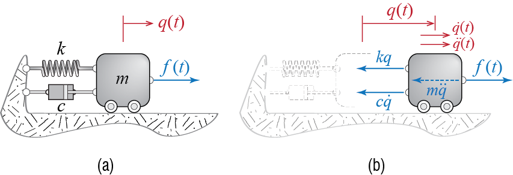
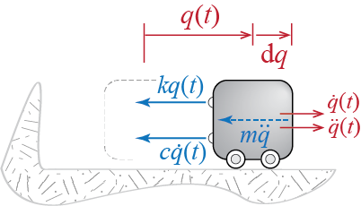

2 Free Vibrations of Single Degree of Freedom Systems
2.1 Motivation and Preliminary Discussions
The fundamental step in the analysis of any system is idealization and conceptual modeling. In engineering analysis, the idealized model should be simple enough so as to allow extraction of predictive results, but it should still have sufficient complexity to reflect all the salient features of the particular problem studied. The claim to validity may only be tested against experiments which are neither feasible nor even possible for many structural systems. Some simple models have however provided acceptable predictive accuracy in numerous previous trials so that structural engineers take many such models for granted while thinking about real, complex structures.
The static analysis of structures makes ample use of simple behavioural models; trusses, beams, plates or shells, elastic or inelastic, with or without time dependent properties have been used in the design and analysis of many structures still standing. The degree of freedom of a structural element in static analysis is associated with deformation patterns that are included in the model. A truss element is assumed, based on connection details and loading patterns, to deform only axially so that the final form of the bar is completely determined by translations of its two end points. A beam element, on the other hand, has rotational deformations so that its deformed shape is determined by end translations, end rotations, and the deformational patterns imposed by the loads applied inbetween its two ends.
Since the concept of degree of freedom in dynamics is intimately connected to mass distribution and forces associated with accelerations, it may be the case that static and dynamic degrees of freedom of a system do not map one-to-one. In dynamics, inertia-related degrees of freedom govern and the static degrees of freedom will often need to be condensed since, in developing simple models of deformable structures, we will often assume that the mass is concentrated at certain locations.1 To discuss how such a simplification may proceed, let us consider the portal frame shown in Figure 2.1.
Under the action of a general static loading, one needs to keep track of the three degrees of freedom shown in Figure 2.1(a) to be able to specify the deformations that take place: The lateral translation \(u_1\) of the joints, and the joint rotations \(u_2\) and \(u_3\).2 The dominant issue in modeling a system for dynamic analysis, however, is the distribution of the mass or, relatedly, the inertial effects produced by the distribution of the mass and their accelerations in the system (think of d’Alembert forces). It is common to consider that in such structural frames most of the mass will be concentrated in the level of the floor plate and the beams attached to it; furthermore, the accelerations at this level will also be relatively more significant than say the accelerations near the supports. Should one wish to incorporate the contribution of the columns to the mass, it may be argued that some , but not all, of the column mass will have an significant effect on the dynamics. With this line of thought, a model in which masses are lumped to the two joints may be developed. An important question that must be raised is whether or not rotational accelerations will have a significant affect. This is a question without an obvious a priori answer but past experiences indicate that under the action of common load effects, rotational accelerations at the joints and the inertial effects thereby generated remain inconsequential compared to those related to lateral translation; in a sense these rotations are predominantly secondary effects caused by lateral translation and compatibility. If rotational accelerations are thus neglected, angular momentum equations for the joints will be in essence static equilibrium equations, and no mass need to be assigned to the rotational degrees of freedom. This model, commonly employed in finite element analysis of frame structures, is referred to as the lumped mass model.
Since the lateral translation is assumed to be common to both joints, we could consider a single mass \(m=m_1 + m_2\) which would be dynamically equivalent, and the motion of this mass may be completely defined by the single generalized coordinate \(\gc \equiv u_1\) as in Figure 2.1(c). What is left to determine for the formulation of the equation governing the motion of this mass is the lateral stiffness of the frame, i.e. the resistance with which it tries to pull the mass back to the initial equilibrium position.3 This cumulative resistance will stem from the deformations of columns and beams, and from static analysis we know that under the action of the lateral load \(\extforce\), static equilibrium equations for the joints may be expressed as
\[ \begin{bmatrix} k_{11} & k_{12} & k_{13} \\ k_{21} & k_{22} & k_{23} \\k_{31} & k_{32} & k_{33} \end{bmatrix} \begin{Bmatrix} u_1 \\ u_2 \\ u_3 \end{Bmatrix} = \begin{Bmatrix} \extforce \\ 0 \\ 0 \end{Bmatrix} \qquad(2.1)\] where \(k_{ij}\) are stiffness coefficients. Since rotational accelerations and the associated d’Alembert moments are to be neglected, the right hand sides of the second and third equations that represent moment equilibrium of the joints will remain zero in dynamic equilibrium analysis. Consequently, \(\{u_2,u_3\}\) are not independent: noting that \(\gc \equiv u_1\), the relation between \(\gc\) and \(\{u_2,u_3\}\) at any instant will be given by \[ - \begin{bmatrix} k_{22} & k_{23} \\k_{32} & k_{33} \end{bmatrix}^{-1}\begin{bmatrix} k_{21} \\k_{31} \end{bmatrix} \gc = \begin{Bmatrix} u_2 \\ u_3 \end{Bmatrix} \qquad(2.2)\] so that eliminating the rotational degrees of freedom from Equation 2.1 with the help of Equation 2.2 leads to a single expression relating the lateral displacement directly to the lateral force, \[ \left( k_{11}- \begin{bmatrix} k_{12} & k_{13} \end{bmatrix} \begin{bmatrix} k_{22} & k_{23} \\k_{32} & k_{33} \end{bmatrix}^{-1}\begin{bmatrix} k_{21} \\k_{31} \end{bmatrix} \right) \gc = \extforce \rightarrow k \gc = \extforce \qquad(2.3)\] where the coefficient \(k\) is called the lateral stiffness of the frame. This procedure of eliminating the dynamically indirect degrees of freedom from the model is referred to as static condensation and it is widely used to simplify the structural models through elimination of those degrees of freedom onto which no mass or moment of inertia is assigned. It is important to note that even though inertial properties are alluded to, especially with respect to their existence or nonexistence, determination of the stiffness properties of a system is essentially a matter of static analysis.
Now that the conceptual model is finalized, we may use any of the frameworks previously reviewed to derive the equation that will govern the motion of the mass, i.e. the time variation of \(\gc (t)\). For example, making use of d’Alembert’s principle and the free body diagram shown in Figure 2.1(d), the sum of forces in the horizontal direction would lead to \[ m \ddgc (t) + k \gc (t) = \extforce (t) \] which, as we will so often see, is the canonical equation governing the dynamics of undamped linear single degree of freedom systems under the action of external load effects.
There are of course models in which mass is distributed as well as flexibility. Such models will be discussed in latter sections and chapters.↩︎
Even this model has an abundance of implicit assumptions. As an example, the axial deformations are considered to be at least an order of magnitude smaller than flexural deformations, so that: i. the translations of the two joints along the longitudinal axes of the columns are neglected, and ii. the joints are assumed to translate laterally by the same amount since the beam’s axial deformations are neglected.↩︎
There is another important component called damping which is used to model energy dissipation during motion; we leave aside for the moment the introduction of this component.↩︎
2.2 The Prototype
As the equation of motion has the same form for all single degree of freedom (SDOF) systems, a single simple model suffices to conceptually represent all undamped SDOF systems. This model, sketched in Figure 2.2, comprises a mass, representing the inertial features that contribute to the equation of motion through accelerations, and a spring, representing flexiblility features that contribute to the equation of motion through deformations. The mass is assumed to be travelling on a frictionless surface (the wheels are there to hint, admittedly erroneously, at motion unhindered by interaction with the ground) and there are no other dissipative sources either. Physical properties of the system are assumed to be invariant in time. Each component of the model may indeed correspond to a single entity of some system but most likely each will represent the contribution of multiple sources. It may therefore be more appropriate to think of the mass and stiffness coefficients as equivalent mass and equivalent stiffness of the system, but we refrain from emphasizing this distinction through symbols or scripts to in an effort to keep notational complexity at a minimum.
To provide a few examples on how such a model could be so vastly representative, let us first derive the equation of motion for the system of Figure 2.2. The free body diagram of the system including the d’Alembert force is provided in Figure 2.3. Sum of forces in the horizontal direction leads to the following equation of motion governing the time variation of the single coordinate \(\gc\): \[ \extforce (t) - m \ddgc (t) - k \gc (t) = 0 \quad \rightarrow \quad m \ddgc (t) + k \gc (t) = \extforce (t) \qquad(2.4)\]
Alternatively we could use the Lagrangian approach which would proceed as follows: The kinetic and potential energies of the system are given by \[ \ke = \frac{1}{2}m \dgc^2, \quad \pe = \frac{1}{2} k \gc^2 \] while the virtual work done by the external forces through a virtual displacement is given by \[ \vwork_{e} = \extforce \vgc = \vforce \vgc \] so that the generalized force is simply \(\vforce = \extforce\). Therefore Lagrange’s equations lead to \[ \frac{\diff}{\diff t} \left(\frac{\partial \ke}{\partial \dgc}\right) - \frac{\partial \ke}{\partial \gc} + \frac{\partial \pe}{\partial \dgc}= \vforce \quad \rightarrow \quad m \ddgc (t) + k \gc (t) = \extforce (t) \] which, of course, is identical to the equation of motion in Equation 2.4.
Let us now consider the systems shown in Figure 2.4. The simply supported beam in Figure 2.4(a), assumed to behave linear elastically, is supposed to be very light compared to the heavy mass \(m\) so that it is to be modeled as massless. The system has a single degree of freedom since the mass may only translate vertically (assuming the deflections are small so that lateral motion due to beam deformations is negligible). The critical issue in modeling this system is the determination of its stiffness, which is due to the deformation resistance of the beam. By definition, a stiffness coefficient is numerically equal to the external force that should be imposed along the degree of freedom to induce a unit displacement.4 If the beam is undergoing uniaxial bending with bending rigidity \(EI\) (i.e. the product of modulus of elasticity \(E\) and the second moment of the cross sectional area about the bending axis \(I\)) and length \(\ell\), from structural analysis we know that the relationship between a force \(\extforce\) applied at the midspan of the beam and the deflection \(\Delta\) under the force is given by
\[ \extforce = \frac{48 EI}{\ell^3} \Delta \] so that if \(\Delta=1\), then the force that has to be applied is numerically equal to \({48 EI}/{\ell^3}\). While this interpretation is more direct for experimental determination of stiffness, in the analytical derivation the stiffness is simply identified as the coefficient that multiplies the displacement in the linear force-displacement relationship, i.e. \({48 EI}/{\ell^3}\). Whichever way it is interpreted the bottom line is that, as far the vertical motion of the mass is concerned, the massless beam is equivalent to a linear spring with equivalent spring coefficient \[ k = \frac{48 EI}{\ell^3} \] and the equation of motion governing the time variation of \(\gc\) may be shown to be \[ m \ddgc (t) + \frac{48 EI}{\ell^3} \gc (t) = 0 \] since there are no external forces acting on the mass. This statement may immediately trigger the question ‘what happened to gravity?’ In structural dynamics, it is generally assumed that the deformations due to gravity loads and the deformations due to dynamic loads may be analyzed separately and the results so obtained may be superposed afterwards. This of course is strictly possible only if the deformations resulting from either is relatively small so that the geometry is not significantly altered and the response remains linear. There are important exceptions to this approach, most notably for systems in which second order effects and/or nonlinearity is pronounced.

The shaft in Figure 2.4(b) is again assumed to be massless. It is supporting a disc with moment of inertia \(\inertia{\ell}\) about the longitudinal axis of the shaft. When torsional vibrations are to be studied, the system has a single degree of freedom since the disc will only be rotating about the longitudinal axis. Consider now an instant at which the disc has rotated by an amount \(\gc\). If the shaft of length \(\ell\) is assumed to behave linear elastically with torsional rigidity \(GJ\) (i.e. the product of the shear modulus \(G\) and the polar moment of the cross sectional area \(J\)), then the resisting moment acted upon the disc by the shaft at that instant may be shown to be in opposite direction to \(\gc\) and of magnitude \[ \smoment = \frac{GJ}{\ell} \gc \] Sketching the free body diagram of the disc and applying the principle of angular momentum will then yield the equation of motion \[ \inertia{\ell} \ddgc (t) + \frac{GJ}{\ell} \gc (t) = 0 \] which once again has a form identical to that of Equation 2.4: If one could build a physical model that looks like the system shown in Figure 2.2, adjust its mass \(m\) to be numerically equal to \(\inertia{\ell}\), and adjust its stiffness \(k\) to be numerically equal to \(GJ/\ell\), then the response of that built model would perfectly match the response of the disc-shaft system under numerically similar load effects. Such similarities are generally referred to as mechanical analogies and with this terminology, the system of Figure 2.2 may be referred to as the mechanical analogue for all undamped linear single degree of freedom systems.
Slightly more complicated is the system shown Figure 2.4(c), where a three member truss, supported by two identical springs, is carrying a heavy mass attached to its top node. To simplify the problem, it is assumed that the truss members have negligible mass, and that the supports are restrained to move vertically. Due to symmetry, the mass will translate in the vertical direction alone, assuming no external forces are present to explicitly force any other motion. The system therefore again has only one degree of freedom. If we were to consider an instant at which the mass has moved down an amount of \(\gc\), it is clear that some of that displacement will be due to the deformation of the truss bars and the rest will be due to the deformation of the springs. A detailed analysis may be undertaken to analyze the bar forces and associated displacements to find the equivalent stiffness of the system but the following analogy may help while thinking about this and similar problems. The combined system of Figure 2.5(a), with the massless truss and springs, is mechanically analogous to the springs shown in Figure 2.5(b) where the truss has been replaced by a spring with stiffness \(k_t\). This spring is representative of the force-displacement relationship of the truss alone, with displacement here referring to the relative vertical translation of node \(c\) with respect to nodes \(a\) and \(b\) which, due to symmetry, will behave identically. It may be shown through structural analysis that the relative vertical displacement \(\Delta\) of node \(c\) under the action of a vertical force \(\extforce\) applied at \(c\) is given by \[ \Delta = \frac{2\ell}{3EA}\extforce \] so that the equivalent spring coefficient \(k_t\) may be defined as \[ k_t = \frac{3EA}{2\ell} \] As for the two springs supporting the truss, they may be said to be connected in parallel; their displacement is the same but each will carry a portion of the total force in proportion to its stiffness. Consider any two linear springs, with coefficients \(k_1\) and \(k_2\), connected in parallel. Let the total force they transmit be \(\extforce\), and assume they both displace by the same amount \(\Delta\). The relation between force and displacement for such a system would be \[ \extforce = \underbrace{k_1 \Delta}_{{\text{force in $1$}}} + \underbrace{k_2 \Delta}_{{\text{force in $2$}}} = (k_1 + k_2) \Delta \] so that the response of such a system would be equivalent to a system with a single spring of stiffness \(k_1 + k_2\).5 Therefore the system of Figure 2.5(b) may be replaced by the system of Figure 2.5(c).
Now we have two springs in series, with stiffness coefficients \(k_t\) and \(2k_s\). For any two linear springs, say with stiffness coefficients \(k_1\) and \(k_2\), that are connected in series, the force transmitted through each will be the same, but each will contribute to the displacement in proportion to their stiffness. The relationship between the force \(\sforce\) through such a system and the total displacement \(\Delta\) is given by \[ \Delta = \underbrace{\frac{\extforce}{k_1}}_{{\text{deformation in $1$}}} + \underbrace{\frac{\extforce}{k_2}}_{{\text{deformation in $2$}}} = \left(\frac{1}{k_1} + \frac{1}{k_2}\right) \extforce \] so that such a series system would be equivalent to a single spring with spring coefficient6 \[ \frac{1}{\frac{1}{k_1} + \frac{1}{k_2}} \] Applying this result to our system leads finally to the single equivalent spring shown in Figure 2.5(d), with equivalent spring coefficient \(k\) given by \[ k = \frac{1}{\frac{1}{k_t} + \frac{1}{2k_s}} = \frac{6EAk_s}{4\ell k_s + 3 EA} \] and the equation of motion for the system of Figure 2.4(c) would finally be derived as \[ m \ddgc (t) + k \gc (t) = m \ddgc (t) + \frac{6EAk_s}{4\ell k_s + 3 EA} \gc (t) = 0 \]
We should recall that, although various details on a number of issues have been mentioned, the main point of this exercise was to motivate the use of the prototype single degree of freedom model. Whether or not a system may be effectively represented by a single degree of freedom model, however, is a question that does not have a straightforward answer, as hopefully illustrated by even the relatively simple systems discussed above. There is no shortcut or a single foolproof recipe that we know of which would be applicable in all situations; as such, this book will mainly focus on the methods of analysis that will be applicable to different models, assuming that those models are representative of whatever real life system they are aspiring to replicate the behavior of. The success or failure of the modeling approach will eventually boil down to how accurately the model will be able to predict the real response. The only way we know of to increase one’s model developing abilities is simply by doing: working on many textbook exercises and more realistic problems to get acquainted with a diverse set of cases, identifying the strengths and caveats of modeling assumptions and approximations, so as to be able to make rational choices based on reliable experience and information. We therefore highly recommend the reader to attempt all the solved and unsolved exercises that will be provided in the text in an effort to start on this arduous journey which will in all likelihood continue, as ours still do, indefinitely.
When more than one degree of freedom are present, one should consider forces at all degrees of freedom so that while a unit displacement occurs in one, there are no displacements at any other degrees of freedom. More on this in latter chapters.↩︎
Which may easily be generalized to any number of springs connected in parallel.↩︎
Which again generalizes easily to multiple springs connected in series.↩︎
2.3 Undamped Free Vibrations
If a system in natural (static) equilibrium is set to motion by imposing some initial displacement and/or velocity but then left to move around the initial equilibrium configuration on its own, without imposing any external load effects, then the system is said to be executing free vibrations.
In order to introduce some basic concepts and definitions, let us first analyze a system in which there is no energy dissipation. Such a system would be governed by Equation 2.4 but with no external force so that \[ m \ddgc (t) + k \gc (t) = 0 \] but this equation alone is not sufficient to describe the problem completely. To be able to determine the time variation of \(\gc (t)\), one needs to know the state of the system at some time so as to be able to track the system thereafter. The state of a single degree of freedom system at some instant \(t=t_o\) refers collectively to its displacement and velocity, i.e. \(\{\gc(t_o),\dgc(t_o)\}\), since these two variables are sufficient to determine all that happens to the system along with the governing equation of motion. This ‘instant’ \(t_o\) is generally taken to be the start of the time interval considered corresponding to \(t=0\), and the values of displacement and velocity at this initial instant are called initial conditions for the system. These initial conditions are so often utilized that we shall denote them by special symbols: the initial displacement will be denoted by \(\gcic\) and the initial velocity by \(\dgcic\). A more proper statement of the problem may now be expressed as: \[ m \ddgc (t) + k \gc (t) = 0 \, ; \quad \left\{\gc(0)= \gcic,\dgc(0) = \dgcic\right\} \qquad(2.5)\]
Equation 2.5 is a second order linear differential equation with constant coefficients. Its solution may be expressed in the form \[ \gc (t) = A \expon{st} \qquad(2.6)\] where \(A\) and \(s\) are in general complex valued and as yet undetermined. Substituting this proposed solution to the equation of motion in Equation 2.5 yields \[ (m s^2 + k) A \expon{st} = 0 \] If this equality is to be satisfied for all time \(t\), then there are two possibilities that should be considered. It could be that \(A = 0\), in which case equilibrium is automatically satisfied since the system is not moving; this is called the trivial solution. The second possibility, which is the non-trivial solution, requires \(s\) to be such that \[ ms^2 + k = 0 \] which yields two solutions for \(s\): \[ s_1 = + \sqrt{-\frac{k}{m}} = + \imag \freq, \quad s_2 = - \sqrt{-\frac{k}{m}} = - \imag \freq \] where \(\imag\), defined through \(\imag^2 \equiv -1\), is the unit imaginary number, and we have introduced \(\freq \equiv + \sqrt{k/m}\). This variable \(\freq\) is of fundamental importance; it is called the (undamped) natural frequency of the system for reasons that will soon be clear. Since both of the solutions for \(s\) will satisfy the equation of motion, the general solution will be the superposition of the two, so that \[ \gc (t) = A_1 \expon{s_1 t} + A_2 \expon{s_2 t} = A_1 \expon{\imag \freq t} + A_2 \expon{-\imag \freq t} \qquad(2.7)\] and finally, since \(\gc (t)\) is real valued, it must be that \(A_1\) and \(A_2\) are complex conjugates, so that with \(A = A_1 = a+\imag b = A_2^* = (a-\imag b)^*\), we have the following general solution: \[ \gc (t) = A \expon{\imag \freq t} + A^* \expon{-\imag \freq t} \qquad(2.8)\] Equation 2.8 is referred to as the general solution since the response of all SDOF systems to initial conditions will be of this form. The two coefficients \(a\) and \(b\) in \(A = a + \imag b\) will have to be determined based on the specific initial conditions of the particular problem being studied. This form of the solution, however, is not very conducive to direct physical interpretation, and most often expressing the solution in terms of well known trigonometric functions is preferred. Euler’s formula says that \[ \expon{\pm \imag \theta} = \cos \theta \pm \imag \sin \theta \qquad(2.9)\] and when this expansion is used in Equation 2.8 with \(\theta = \freq t\), we arrive after some algebra to the following form for the general solution: \[ \gc (t) = C_1 \cos \freq t + C_2 \sin \freq t \qquad(2.10)\] When expressed in this form, the nature of the time variation of \(\gc\) is much more obvious. The displacements that will occur in a SDOF system after it is set to motion will be of sinusoidal nature, with frequency \(\freq\) and an amplitude that depends on the particular initial conditions. In fact, for \(\gc(0) = \gcic\) and \(\dgc (0) = \dgcic\), the coefficients \(C_1\) and \(C_2\) will be evaluated as \[\begin{align*} \gc (0) = \gcic & = C_1 \cos 0 + C_2 \sin 0 \quad \rightarrow \quad C_1 = \gcic \\ \dgc (0) = \dgcic & = - \freq C_1 \sin 0 + \freq C_2 \cos 0 \quad \rightarrow \quad C_1 = \frac{\dgcic}{\freq} \end{align*}\] so that the general solution now takes the form \[ \gc (t) = \gcic \cos \freq t + \frac{\dgcic}{\freq} \sin \freq t \qquad(2.11)\] That this solution corresponds in fact to a single sinusoidal wave may be shown mathematically through the use of the following expansion formula: \[ \cos (\theta \pm \varphi) = \cos \theta \cos \varphi \mp \sin \theta \sin \varphi \qquad(2.12)\] A function of the form \(Q \cos (\freq t - \phs)\) is therefore equivalent to \[ Q \cos (\freq t - \phs) = (Q \cos \phs) \cos \freq t + (Q \sin \phs) \sin \freq t = C_1 \cos \freq t + C_2 \sin \freq t \] so that with \[ C_1 = Q \cos \phs , \qquad C_2 = Q \sin \phs \qquad(2.13)\] the general solution may be expressed as \[ \gc (t) = Q \cos (\freq t - \phs) \qquad(2.14)\]
This form is arguably the one that is most easily visualized. The response to initial conditions is in the form of a single cosine wave with amplitude \(Q\) and phase angle7 \(\phs\). The amplitude and phase are given, through Equation 2.13 and Equation 2.11, by \[ Q = \sqrt{C_1^2 + C_2^2} = \sqrt{\gcic^2 + \left(\frac{\dgcic}{\freq}\right)^2} \qquad(2.15)\] \[ \phs = \arctan \frac{\sin \phs}{\cos \phs} = \arctan \frac{C_2/Q}{C_1 / Q} = \arctan \frac{\dgcic / (\freq Q)}{\gcic / Q} \qquad(2.16)\] The response of an undamped linear single degree of freedom system to some initial conditions \(\gcic > 0\) and \(\dgcic > 0\) is shown in Figure 2.6. This sinusoidal response starts from the initial displacement \(\gcic\) with slope \(\dgcic\). The first peak is reached at time \(t=\hat{t} = \phs / \freq\). The peak amplitude \(Q\) is the same at all peaks, in other words the vibrations do not decay since there is no energy dissipation in the system and once it gets going with a certain total mechanical energy, given by \[ \te_o = \ke_o + \pe_o = \frac{1}{2} m \dgcic^2 + \frac{1}{2} k \gcic^2 \] its mechanical energy remains at this constant level. The maximum displacement and velocity (in an absolute sense) that occur during the motion, inferred from Equation 2.14 and its time derivative, are given by \[ \gc_{\max} = Q, \quad \dgc_{\max} = \freq Q \]
The maximum kinetic energy occurs whenever the displacement is zero and at a value of \[ \ke_{\max} = \frac{1}{2} m (\dgc_{\max})^2 = \frac{1}{2} m (\freq Q)^2 = \frac{1}{2} m \left(\freq^2 \gcic^2 + \dgcic^2\right) \] whereas the maximum potential energy occurs whenever the velocity is zero and at a value of \[ \pe_{\max} = \frac{1}{2} k (\gc_{\max})^2 = \frac{1}{2} k Q^2 = \frac{1}{2} k \left(\gcic^2 + \frac{\dgcic^2}{\freq^2}\right) \] The maximum force that occurs in the spring, possibly important for design considerations, is given by \[ \text{maximum spring force} = k \gc_{\max} = k Q = k \sqrt{\gcic^2 + \left(\frac{\dgcic}{\freq}\right)^2} \]
The response is said to be periodic with period \(\period\) so that the motion of the mass repeats itself in patterns of duration \(\period\); periodicity is expressed mathematically by the condition \[ \gc(t) = \gc(t+\period) \quad \forall t \] where \(\period\) is said to be the period of the system, given by \[ \period = \frac{2\pi}{\freq} \] as may be easily inferred from Equation 2.14. The period, which may be defined as the time it takes for motion to complete one full cycle, is a fundamental quantity in structural dynamics and it is more often referred to than the frequency due to its more direct physical implication. It is often stated in units of seconds [\(\punit{sec}\) or \(\punit{s}\)] since the periods of most systems encountered in structural dynamics are of the order of seconds. What is called the cyclic frequency is defined as the number of cycles completed in a unit of time, i.e. \[ \text{cyclic frequency} = \frac{1}{\period} = \frac{\freq}{2 \pi} \] If time is measured in seconds, than the unit of cyclic frequency is named \(\textrm{Hertz}\), denoted by \(\punit{Hz}\), so that \(1 \unit{Hz} = \punit{no. of cycles} / 1 \unit{sec}\). To distinguish between the two frequencies, \(\freq\) (with units of \(\punit{rad/sec}\)) is often referred to as angular frequency since it corresponds to the angle the cosine function in the response goes through in a unit of time. Here we will simply refer to \(\freq\) as frequency to economize on adjectives, and use the term cyclic frequency whenever we need to explicitly refer to it.
A phase angle is also referred to as a lead or a lag. When written in this form, \(\phs\) may be referred to as a lag in the sense that the time to first peak is determined by the value of \(\phs\) and for any \(\phs > 0\), the first peak occurs sometime after \(t=0\), as opposed to an unshifted cosine wave (\(\phs = 0\)) for which the first peak occurs exactly at \(t=0\).↩︎
2.4 Damping
Although indispensable for introducing basic concepts, one of the major drawbacks of the undamped model is that it does not reflect energy dissipation, which is a phenomenon observed in all real life systems. Energy dissipation may occur do to various mechanisms. Friction between the system and its surroundings, radiation, internal friction and heat generation, cracking and plastic deformations, to list some prominent causes, may all contribute at varying degrees to dissipation. The simple fact is that explicit identification and modeling of all such causes is not feasible if at all possible, unless some of them are dominating and the aim is to specifically address and study them.
2.4.1 Viscous Damping Model
A simple model for dissipation has proved both mathematically convenient and practically applicable, so as to provide acceptable representations of experimentally observed responses. The model is based phenomenologically on the response of a linear viscous dashpot in which the applied force is proportional to the velocity of deformation. Amalgamation of energy dissipation mechanisms to a single equivalent linear viscous dashpot provides a model that is capable of producing a certain type of amplitude decay often observed in free vibrations of real structures. This model is therefore generally accepted as a reasonable prototype to model energy dissipation in small amplitude vibrations, so much so that it is explicitly referred to in many structural codes and guidelines. With due caution we will simply refer to this model as viscous damping and represent it graphically with a dashpot as shown in Figure 2.7(a).

The force across the damper is given by \(c \dgc\) where \(\dgc\) is the rate of deformation and \(c\) is called the (linear) viscous dashpot coefficient: it is this coefficient, or some other one derived form it, that must be adjusted properly if the model is to represent accurately the amplitude decrement of the real system. The force acted upon the mass by the damper is therefore equal in magnitude to \(c \dgc\) and opposite in direction to the direction of the velocity. The free body diagram of the mass, including the damping force and the d’Alembert force, is shown in Figure 2.7(b). The sum of the horizontal forces leads to \[ m \ddgc (t) + c \dgc (t) + k \gc (t) = \extforce (t) \qquad(2.17)\] which is the equation of motion that represents the dynamics of all viscously damped single degree of freedom systems. The unforced vibrations will hence be governed by \[ m \ddgc (t) + c \dgc (t) + k \gc (t) = 0 \, ; \quad \left\{\gc(0) = \gcic, \; \dgc(0) = \dgcic\right\} \qquad(2.18)\] which is once again a second order linear differential equation with constant coefficients.
Since Equation 2.18 is of the same form as Equation 2.5, we may expect Equation 2.6 to work in this case as well. Using the candidate solution in Equation 2.18 leads to \[ (ms^2 + cs + k)A\expon{st} = 0 \] and the non-trivial solution requires \[ ms^2 + cs + k = 0 \] There are two solutions for \(s\) that satisfy this quadratic equation, given by \[ s_1 = -\frac{c}{2m} + \frac{1}{2m}\sqrt{c^2 - 4mk}, \quad s_2 = -\frac{c}{2m} - \frac{1}{2m}\sqrt{c^2 - 4mk} \] It is possible to rewrite these expressions in somewhat simpler, familiar terms. Remembering that \(\freq^2 = k/m\), and defining \[ 2 \damp \freq \equiv \frac{c}{m} \qquad(2.19)\] where \(\damp\) is a new but dependent variable derived from the damping properties, the roots may also be expressed as \[ s_1 = -\damp \freq + \freq \sqrt{\damp^2 - 1}, \quad s_2 = -\damp \freq - \freq \sqrt{\damp^2 - 1} \qquad(2.20)\] It is somewhat easier to observe that the nature of the solution depends very much on the value of the coefficient \(\damp\). Although only one of the cases is mostly relevant, for completeness we note the following three possibilities:
- Overdamped systems: Consider that \(\damp > 1\). In this case both roots are real valued and the exponentials lead to hyperbolic sines and cosines such that no oscillation is possible. In fact, one has \[\begin{align*} \gc (t) & = A_1\expon{\left(-\damp \freq + \freq \sqrt{\damp^2 - 1}\right)t} + A_2\expon{\left(-\damp \freq - \freq \sqrt{\damp^2 - 1}\right)t} \\ & = \expon{-\damp \freq t}\left[A_1\expon{\freq t \sqrt{\damp^2 - 1}} + A_2\expon{- \freq t \sqrt{\damp^2 - 1}}\right] \\ & = \expon{-\damp \freq t}\left[(A_1+A_2)\cosh \left(\freq t \sqrt{\damp^2 - 1}\right) + (A_1 - A_2)\sinh \left(\freq t \sqrt{\damp^2 - 1}\right) \right] \\ \gc (t) & = \expon{-\damp \freq t}\left[C_1 \cosh \left(\freq t \sqrt{\damp^2 - 1}\right) + C_2 \sinh \left(\freq t \sqrt{\damp^2 - 1}\right) \right] \end{align*}\] To simplify the presentation, let us define \[ \vartheta \equiv \freq \sqrt{\damp^2 -1} \] so that \[ \gc (t) = \expon{-\damp \freq t}\left(C_1 \cosh \vartheta t + C_2 \sinh \vartheta t \right) %= \expon{-\damp \freq t} Q \cosh \left(\mu t - \phs \right) \qquad(2.21)\] To satisfy initial conditions one must have \[\begin{align*} \gc(0) & = \gcic = C_1 \quad \rightarrow \quad C_1 = \gcic \\ \dgc(0) & = \dgcic = - \damp \freq C_1 + \vartheta C_2 \quad \rightarrow \quad C_2 = \frac{\dgcic + \damp \freq \gcic}{\vartheta} \end{align*}\] and hence the general solution for initial condition response of overdamped SDOF systems may be expressed as \[ \gc (t) = \expon{-\damp \freq t}\left[\gcic \cosh \vartheta t + \frac{\dgcic + \damp \freq \gcic}{\vartheta} \sinh \vartheta t \right] \]
How the response varies for some values of \(\damp\) may be seen in Figure 2.8. Each curve in this figure shows the response of an overdamped SDOF system with a specific value of \(\damp\) due to nonzero initial displacement \(\gcic \neq 0\) and zero initial velocity \(\dgcic = 0\). The plots are non-dimensionalized, with the horizontal axis corresponding to time scaled with \(\period\) (i.e. the period the system would have if it were undamped). Evidently all responses simply decay towards the static equilibrium position. What is slightly counter intuitive is that the higher the damping coefficient in an overdamped system, the longer it takes for the system to go back to the original configuration. Higher damping limits the velocities to smaller values so that recovery takes longer.
Critically damped systems: The nature of the solution will eventually change as damping gets smaller and the transition occurs when \(c^2 - 4mk = 0\) or, equivalently, when \(\damp = 1\). In this case the roots in Equation 2.20 yield \[ s_1 = s_2 = - \freq \] and with repeated roots the solution takes the form \[ \gc (t) = A_1 \expon{- \freq t} + A_2 t \expon{- \freq t} \] For initial displacement \(\gcic\) and initial velocity \(\dgcic\), the coefficients are evaluated as \[\begin{align*} \gc(0) & = \gcic = A_1 \quad \rightarrow \quad A_1 = \gcic \\ \dgc(0) & = \dgcic = - \freq A_1 + A_2 \quad \rightarrow \quad A_2 = \dgcic + \freq \gcic \end{align*}\] so that the general solution for critically damped single degree of freedom systems may be expressed as \[ \gc (t) = \gcic \expon{- \freq t} + (\dgcic + \freq \gcic) t \expon{- \freq t} \] The response is once again a simple decay with no oscillation around the static equilibrium configuration but the recovery will be faster than the curves shown in Figure 2.6. This particular case allows us to define a critical damping for SDOF systems, given by \[ c_{cr} = 2\sqrt{km} \] since for \(c > c_{cr}\) the system will be overdamped, and the for \(c < c_{cr}\) it will be underdamped. This critical value depends on the mass and stiffness properties of the system and thus it may be estimated for design purposes. Employing the critical damping concept, the coefficient \(\damp\) initially defined via Equation 2.19 may also be defined as the ratio of the available damping to the critical damping, i.e. \[ \damp = \frac{c}{c_{cr}} \] and so \(\damp\) is referred to as the critical damping ratio or simply as the damping ratio, which is the name we will use to address it.
Underdamped systems: When \(\damp < 1\), the square roots in Equation 2.20 lead to complex numbers, and harmonic motion becomes possible. Let us express the two roots as \[\begin{align*} s_1 & = -\damp \freq + \freq \sqrt{-(1-\damp^2)} = -\damp \freq + \imag \dfreq , \\ s_2 & = -\damp \freq - \freq \sqrt{-(1-\damp^2)} = -\damp \freq - \imag \dfreq = s_1^* \end{align*}\] where \[ \dfreq \equiv \freq\sqrt{1-\damp^2} \qquad(2.22)\] is called the damped frequency of the system. Remembering the discussion about complex coefficients in undamped vibrations, the general solution may be written as \[ \gc (t) = \expon{-\damp \freq t}\left(A \expon{\imag \dfreq t} + A^* \expon{-\imag \dfreq t} \right) \] which, with the help of Equation 2.9, may be recast in the following form: \[ \gc (t) = \expon{-\damp \freq t}\left(C_1 \cos \dfreq t + C_2 \sin \dfreq t \right) \] Applying the initial conditions leads to \[\begin{align*} \gc(0) & = \gcic = C_1 \quad \rightarrow \quad C_1 = \gcic \\ \dgc(0) & = \dgcic = - \damp \freq C_1 + \dfreq C_2 \quad \rightarrow \quad C_2 = \frac{\dgcic + \damp \freq \gcic}{\dfreq} \end{align*}\] so that \[ \gc (t) = \expon{-\damp \freq t}\left(\gcic \cos \dfreq t + \frac{\dgcic + \damp \freq \gcic}{\dfreq} \sin \dfreq t \right) \qquad(2.23)\] Alternatively, via Equation 2.12 and defining \[ Q \cos \phs = C_1, \quad Q \sin \phs = C_2 \] the solution may be expressed as \[ \gc (t) = Q \expon{-\damp \freq t} \cos (\dfreq t - \phs) \qquad(2.24)\] where \[ Q = \sqrt{C_1^2 + C_2^2} = \frac{\sqrt{\gcic^2 + 2 \damp \gcic \left(\ratio{\dgcic}{\freq}\right) + \left(\ratio{\dgcic}{\freq}\right)^2}}{\sqrt{1-\damp^2}} \qquad(2.25)\] \[ \phs = \arctan \frac{\sin \phs}{\cos \phs} = \arctan \frac{C_2/Q}{C_1 / Q} = \arctan \frac{(\dgcic+\damp\freq\gcic) / (\dfreq Q)}{\gcic / Q} \qquad(2.26)\] Evidently the oscillations in underdamped systems will take place with an exponentially decaying amplitude defined by \(Q\expon{-\damp \freq t}\). The response is not strictly harmonic but we still talk of a period and frequency of the system: the oscillatory part, \(\cos (\dfreq t - \phs)\), is a harmonic wave with frequency equal to the damped frequency of the system, and the damped period of the system is defined as \[ \dperiod = \frac{2\pi}{\dfreq} \] Since the damping ratio \(\damp < 1\), \[ \dperiod = \frac{2\pi}{\freq \sqrt{1-\damp^2}}= \frac{\period}{\sqrt{1-\damp^2}} > \period \] so that the damped period is slightly longer than the undamped period. The difference, however, is generally small for common structures, in which damping ratios are generally on the order of \(1\%\) to \(15\%\). Even for a relatively high damping ratio of \(10\%\), the difference between the two periods is about \(0.5 \%\); in most applications, this difference may be neglected and the undamped period may be referred to.
The responses of underdamped systems are visualized in Figure 2.9. The typical response of an underdamped system, subject to initial conditions \(\gcic > 0\) and \(\dgcic > 0\) is shown in Figure 2.9(a). The response at any instance is the product of the harmonic wave \(\cos (\dfreq t - \phs)\) with the envelope \(Q\expon{-\damp\freq t}\), resulting in an oscillation about the natural equilibrium configuration with an exponentially decaying amplitude. The damped period is easily identified as the duration between any two consecutive down-crossings (or up-crossings), or any two consecutive peaks (or troughs). How fast the response decays in a single cycle depends on the value of \(\zeta\); this dependence is clearly seen in Figure 2.9(b), which shows the responses of underdamped systems with three different values of \(\zeta\), all plotted in non-dimensionalized form to allow a direct comparison.
2.4.2 Estimating Viscous Damping from Free Vibration Data
Increasing damping ratio in underdamped systems leads obviously to faster decay in the response, which may be quantified by the decrease in amplitudes of peaks. This relation is used directly in a well known method used to estimate the damping ratio of SDOF systems. Consider a local peak, say the ith local peak, that occurs at some time \(t=t_i\). The amplitude \(Q_i\) of this peak will be given by \[ Q_i = \gc (t_i) = Q \expon{-\damp \freq t_i} \cos (\dfreq t_i - \phs) \] as shown in Figure 2.10.
This local peak does not occur exactly when the cosine term is equal to one. In fact, by taking the first time derivative of the displacement given by Equation 2.24 and after combining the harmonic terms, the velocity may be expressed as \[ \dgc (t) = - \freq Q \expon{- \damp \freq} \sin (\dfreq t - \phs + \alpha) \qquad(2.27)\] where \(\alpha\) is a phase shift that depends on the damping ratio as \(\tan \alpha = \damp/\sqrt{1-\damp^2}\), which yields \(\alpha \approx \damp\) for \(\damp \ll 1\). If there is no damping then \(\alpha=0\), and for small values of damping it is very close to zero. In any case, an extremum in the displacement occurs whenever \(\sin (\dfreq t - \phs + \alpha) = 0\). If a local peak occurs at time \(t=t_i\), then the next local peak occurs at \(t=t_i + \dperiod\) since \(\sin (\dfreq (t_i+\dperiod) - \phs + \alpha) = \sin (2\pi + \dfreq t_i - \phs + \alpha) = \sin (t_i - \phs + \alpha)\); it is obvious from this discussion that all consecutive local peaks are separated by duration \(\dperiod\). The amplitude \(Q_{i+1}= \gc (t_i+\dperiod)\) of the \((i+1)\)th local peak therefore is given by \[ Q_{i+1} = Q \expon{-\damp \freq (t_i+\dperiod)} \cos (\dfreq (t_i+\dperiod) - \phs) = Q \expon{-\damp \freq t_i} \expon{-2 \pi \damp / \sqrt{1-\damp^2}} \cos (\dfreq t_i - \phs) \] since the angles in \(\cos (\dfreq (t_i+\dperiod) - \phs)\) and \(\cos (\dfreq t_i - \phs)\) differ by \(2 \pi\). The ratio of the amplitudes of two consecutive local peaks is therefore given by \[ \frac{Q_i}{Q_{i+1}} = \expon{2 \pi \damp / \sqrt{1-\damp^2}} \qquad(2.28)\]
\(\rem{Logarithmic decrement}\) is the name given to the natural logarithm of the ratios of two successive local peaks. It may be measured and calculated directly from recorded free vibration data and it is a widely used indicator of energy dissipation; as the velocity is zero at the peaks, the energy of the system when the mass is at a peak displacement comprises only the potential energy, which is a direct function of the displacement. Based on Equation 2.28, the logarithmic decrement in a viscously damped system is therefore given by \[ \ln \frac{Q_i}{Q_{i+1}} = 2 \pi \frac{\damp}{\sqrt{1-\damp^2}} \qquad(2.29)\] so that, having measured the amplitudes, the damping ratio of the system may be calculated from \[ \frac{\damp}{\sqrt{1-\damp^2}} = \frac{1}{2\pi} \ln \frac{Q_i}{Q_{i+1}} \qquad(2.30)\] When the damping ratio is small, this expression may be approximated by \[ \damp \approx \frac{1}{2\pi} \ln \frac{Q_i}{Q_{i+1}} \qquad(2.31)\] which is the form more commonly encountered. Applications have shown that the damping estimates improve if one uses the ratio of more widely separated peaks instead of two consecutive ones. If one uses two local peaks, \(Q_{i}\) and \(Q_{i+n}\), separated by a duration of \(n\dperiod\), the damping may be estimated as \[ \frac{\damp}{\sqrt{1-\damp^2}} = \frac{1}{2\pi n} \ln \frac{Q_i}{Q_{i+n}} \approx \damp \qquad(2.32)\] where the last approximation is acceptable only for small values of damping ratio; it might be mentioned that the error due to this approximation alone would be less than \(1\%\) for damping ratios less than \(10\%\).
2.4.3 Energy Dissipated by Viscous Damping
The amount of energy dissipated due to viscous damping may be calculated based on the principle of work and energy which states that the total mechanical energy of a system varies as it moves from state 1 at time \(t=t_1\) to state 2 at time \(t=t_2\) according to \[ \te_1 + \wnc_{1 \rightarrow 2} = \te_2 \] where \(\te_i=\ke_i + \pe_i\) is the total energy of the system at state \(i\), and \(\ke_i\) and \(\pe_i\) are the system’s kinetic and potential energies, respectively, at state \(i\). When a single degree of freedom system is governed by Equation 2.17, its kinetic and potential energies at state \(i\) at time \(t=t_i\), may be expressed as \[ \ke_i = \frac{1}{2} m [\dgc(t_i)]^2, \qquad \pe_i = \frac{1}{2} k [\gc(t_i)]^2 \] with the set \(\left\{ \gc (t_i), \dgc (t_i) \right\}\) denoting the state of the system at time \(t_i\). The displacement (deformation) and the velocity are sufficient to define the state since the acceleration at time \(t=t_i\) is dependent on these through the equation of motion. The third component \(\wnc_{1 \rightarrow 2}\) is the work done by non-conservative forces as the system moves from state 1 to state 2. The only non-conservative force in the system of Figure 2.7 is the damping force \(c\dgc\). Consider the free body diagram of the SDOF system at some time \(t\) shown in Figure 2.11. When the system moves by an amount \(\diff \gc\), the change in the system’s energy will equal to the work done by this force so that \[ \diff{\te} = - c \dgc \diff \gc \qquad(2.33)\] where the minus sign is due to the algebraicaly consistent directions employed. Note that the work done by the spring force is the change in potential energy and the work done by the d’Alembert force is the change in kinetic energy, and so they are accounted for as \(\diff{\te}\). The time rate of change of energy will be given by \[ \divt{\te} = - c \dgc \divt{\gc} = - c \dgc^2 \qquad(2.34)\]

In principle, this expression may be integrated, either over a path via Equation 2.33 or over a duration via Equation 2.34, to calculate the energy dissipated over the path or time interval investigated, which is simply the negative of the work done by the non-conservative forces. A simple result, however, does not emerge in the case of free vibrations because the dissipated energy depends on the state or, equivalently, where in its cycles the system is. To give an idea as to possible results, the energy dissipated in \(t=[0,\dperiod)\) may be shown to be equal to \[\begin{align*} \int_{0}^{\dperiod} c \dgc^2 \diff t & = c \int_{0}^{\dperiod} \left[-Q\expon{-\damp \freq t} \left(\damp \freq \cos (\dfreq t - \phs) + \dfreq \sin(\dfreq t - \phs) \right) \right]^2\diff t \\ & = \frac{cQ^2}{4}\left[ 1 - \expon{-4 \pi \damp / \sqrt{1-\damp^2}} \right] \left[\frac{\dfreq^2}{\damp\freq} + 2 \damp \freq \cos^2 \phs - \dfreq \sin 2\phs\right] \end{align*}\]
One graphical tool frequently used to visualize the effects of energy dissipation is to plot the force-displacement relationship. The force in the context of free vibrations refers to the total resisting force that acts on the mass of the prototype model. When the system is undamped, this force is simply \(\extforce_{R}=k \gc\), and when the system is linearly viscously damped, it is \(\extforce_{R} = k \gc + c \dgc\). The force-displacement graphs of these two cases are presented in Figure 2.12. These plots have been developed for durations of one period starting with time \(t=0\) for systems subjected to the same initial velocity but no initial displacement, the only difference between the systems of the two plots being the addition of damping in the second one.
The main difference between the behavior observed in Figure 2.12 is the area enclosed by each curve. When undamped, the system loads and unloads (with directions indicated by the arrowheads on the curves) along the same line as shown in Figure 2.12 (a). Force and displacement are in phase, and as a result the total work done by the force as the system moves through one full period is zero. In the viscously damped system, the path is curvilinear as shown in Figure 2.12 (b) because of the phase difference between the force and displacement; moreover, the total work done is not zero in this case but the system dissipates energy of amount equal to the shaded area “enclosed” within the curve. When the force-displacement curve encloses an area the system is said to exhibit \(\rem{hysteretic behavior}\), after such behavior observed in magnetic hysteresis.
2.4.4 Non-viscous Damping Models
The widespread acceptance of the viscous damping model has reinforced itself with its appearance in structural codes and more recent identification and health monitoring studies which have focused almost exclusively on fitting viscous damping models to vibration data obtained from large scale systems. The complexity of energy dissipation mechanisms in large scale systems somewhat justifies the use of this model due to its relative simplicity and success. When studying individual components, composite materials and high amplitude vibrations, however, other damping mechanisms have proved useful and sometimes provided better results. Although we will revisit some of these models when studying forced vibrations, here we will briefly mention them and comment on their major differences compared with the viscous damping model.
The two governing characteristics of the viscous damping model are that: i. it predicts an exponentially decaying response; ii. the amount of energy dissipated in one cycle of steady state vibrations under a harmonic external excitation depends on the frequency. A physical shortcoming of the model is that the oscillations theoretically continue indefinitely albeit at completely negligible amplitudes; observationally the vibrations in real structures eventually cease so that the real dissipative mechanism should be at the very least a combination of viscous and friction mechanisms. Since this phenomenon becomes significant in very low amplitudes that possibly have no bearing at all on design constraints it is not generally dwelt upon, and the focus of investigations lie with the general characteristics that are pronounced in design sensitive amplitudes.
One often cited alternative damping model is called Coulomb damping, with energy dissipated through sliding friction (in other words, external friction). In this case the dissipative force is not velocity dependent as in the case of viscous damping but rather it has a constant value, whereas the direction of this force varies as the direction of motion, i.e. direction of velocity, changes. The solution of this problem is not particularly difficult but now the problem is that of forced vibrations. Analysis of this problem shows that the decay predicted by Coulomb damping is linear, as opposed to the exponential decay of viscous damping; the mass does come to a stop in finite time, however, since the energy of the system eventually fails to overtake friction. The fact that exponential decay seems to match better with experimental evidence is one reason that Coulomb damping has not gained much precedence in structural dynamics.
Another damping model which goes by different names including structural damping or hysteretic damping aims to model dissipation through internal friction. The motivation for this type of damping comes from observations regarding energy dissipation of systems oscillating harmonically, as a single degree of freedom system would when it reaches steady state under a harmonic forcing. A thorough understanding of this statement requires forced vibration analysis, but to provide a qualitative perspective we note that viscous damping leads to a closed, elliptic hysteresis loop whose size depends on the frequency of loading (which in steady state becomes the frequency with which the system moves). Hence, viscous damping or the energy it dissipates is sometimes referred to as frequency dependent. Experimental observations have shown however that hysteresis loops tend to be independent of frequency in a wide range of systems and frequencies. The structural damping model has been proposed to reflect this frequency independent property, which may be mathematically achieved by treating the stiffness as having a complex valued part. The analysis of this model is however more involved and particularly not so simple for free vibrations.
2.5 Generalized SDOF Systems
2.5.1 Continuous Systems
When the mass and flexibility of a system are distributed, it becomes necessary for a precise formulation to treat the system as continuous, and the state of the system is defined as functions of both space (comprising all the points included in the system’s domain) and time. Due to this continuity, such systems have infinite number of degrees of freedoms governed by partial differential equations, and their response shows considerable complexity compared with the simple SDOF model. In certain cases, however, single degree of freedom models may yield reasonable estimates of prominent dynamic characteristics of complex systems provided that the deformation patterns are estimated relatively accurately.
Consider for example a cantilever beam as shown in Figure 2.13; this could be a chimney with possibly variable cross section of bending rigidity8 \(EI = EI(s)\), length \(\ell\), mass per unit length \(\mlen=\mlen(s) = \rho A(s)\). Analysis of the vibration problem for this system requires that the equations of motion be formulated in terms of the displacement field \(\gc=\gc(s,t)\) and one will obtain a partial differential equation, which in the case of variable section will be nonlinear, that must be solved. We will eventually deal with vibrations of simple continuous systems but at this stage such an approach is simply not feasible. The experience gained through analyses of such systems have however shown us that they have many frequencies with which they may oscillate, and that they maintain some particular shapes when they oscillate harmonically with any of those frequencies. This behavior could be exploited and a great simplification would be achieved if the shape of vibration could somehow be foreseen. This of course is not practically possible, but it turns out that a reasonable estimate of how the structure would behave may lead to acceptable results.
We feel it is best to proceed by demonstration, so let us continue the simplified analysis of the chimney. We will assume that during free vibrations the chimney oscillates harmonically with a certain frequency and that during these oscillations it maintains a constant shape albeit with varying amplitude so that the at any instant \(t\), the lateral displacement of the section at location \(s\) is given by \[ \gc (s,t)=\shpf (s) \gengct \qquad(2.35)\] where \(\shpf=\shpf(s)\) is called the shape function and \(\gengc = \gengc (t)\) is a time dependent amplitude, generally corresponding to the actual displacement of a particular point. Equation 2.35 is a variation of the method of separation of variables since instead of solving for possible candidates via the governing equation of motion, the shape function in this case is specified by the analyst. There are some guidelines as to how this choice may be improved. First the restraints: the shape function should satisfy the geometric boundary conditions because only by doing so it can be ensured that the solution will satisfy those conditions. Since in our example the chimney is fixed at \(s=0\), at any instant during motion we should have no translation or rotation at \(s=0\): \[ \gc (s,t)|_{s=0} = 0, \qquad \pardiv{\gc (s,t)}{s}\biggr|_{s=0} = 0 \] If we are to use the approximation of Equation 2.35, these conditions are satisfied at all times only if \[ \shpf (0) = 0, \qquad \divp{\shpf}{s}\biggr|_{s=0} = 0 \] To simplify the presentation, let us introduce the following notation to denote derivatives with respect to a spatial variable, such as \(s\) in this example: \[ \shpf' = \shpf' (s) = \divp{\shpf (s)}{s}, \quad \shpf'' = \shpf''(s) = \frac{\diff^2 \shpf (s)}{\diff s^2} \] With this notation, the geometric conditions may be written more simply as \[ \shpf (0) = 0, \quad \shpf'(0) = 0 \qquad(2.36)\] and we note that, whatever shape function \(\shpf\) we choose for the chimney, we should at a minimum ensure that the conditions in Equation 2.36 are satisfied. Satisfaction of these condition, however, is not sufficient to ensure acceptably accurate results since the approximation will improve only if the shape function truly resembles the actual shape taken on by the system. Various proposals have been discussed to ensure acceptable results, including choosing the shape function as the deflected shape of the structure under some static loading. As the possibilities are numerous, here we will focus on the procedure and we will try to provide some worked examples to investigate the performances of differing shape functions.
For our chimney, we will choose the unknown amplitude \(\gengc\) to be the displacement at the tip, i.e. we choose \(\gengc (t) \equiv \gc(\ell, t)\). The shape function now will have to be a function which will satisfy the geometric boundary conditions at the fixed end, i.e. \(\shpf (0) = 0, \shpf'(0) = 0\), but it will also have to satisfy \(\shpf (\ell) = 1\) at the tip since by choice \(\gc (\ell, t) = \shpf (\ell) \gengc (t) = \gengc (t)\). Two simple candidates could for example be: \[ \shpf (s) = \frac{s^2}{2\ell} \quad \text{or} \quad \shpf(s) = \frac{1}{2}\left(1-\cos \frac{\pi s}{\ell}\right) \]
Having specified a shape function, we are now ready to proceed with the analysis. The method of choice is virtual work, which requires that d’Alembert forces be included. At any point along the chimney the acceleration is given by the second time derivative of \(\gc (s,t)\), and our approximation leads to \[ \gc (t) = \shpf \gengc (t) \quad \rightarrow \quad \frac{\partial^2 \gc}{\partial t^2} = \shpf \ddgengc (t) \] since the shape function is constant in time. For the segment of width \(\diff s\) and located at position \(s\), the d’Alembert force to be acted on it at time \(t\) is given by \[ \bigl[\mlen \diff s\bigr] \shpf \ddgengc (t) \] acting in the direction opposite to that of the acceleration9 so that per unit length, the d’Alembert force is given by \(\mlen\shpf \ddgengc (t)\). These forces are included in the free body diagram shown in Figure 2.13 (c), which also includes the reaction forces at the base (i.e. the fixed end). Since with the inclusion of the d’Alembert forces the system is instantaneously in a state of static equilibrium, the principle of virtual work dictates that in a virtual variation of displacements, the virtual internal work has to be equal to the virtual external work: \[ \vwork_{int} = \vwork_{ext} \] The virtual displacements are generated by a variation in the single free parameter \(\gengc\) because \(\shpf\) is prescribed, and so the virtual displacement pattern is given by \[ \vgc (s) = \shpf (s) \vgengc \qquad(2.37)\] where it should be noted that while \(\gc = \gc (s,t)\) and \(\gengc = \gengc (t)\), \(\vgc\) is a function only of the spatial coordinate and neither \(\vgc\) nor \(\vgengc\) are functions of time.10
Since the shape function satisfies the geometric boundary conditions, there will be no translation of rotation induced at the fixed end during the virtual displacement, and the work done by the reaction forces at the base will be zero. The only external work done is that due to the d’Alembert forces, which may be calculated via \[\begin{align*} \vwork_{ext} & = \int_{0}^{\ell} - \bigl[\mlen \shpf \ddgengc \diff s\bigr] \bigl[\vgc \bigr] \\ & = - \left[\int_{0}^{\ell} \mlen \shpf^2 \diff s \right] \ddgengc \vgengc = - \genm \ddgengc \vgengc \end{align*}\] where \[ \genm = \int_{0}^{\ell} \mlen \shpf^2 \diff s \] is called the generalized mass.
The internal work is slightly more involved with various components that may be taken into consideration. To keep the derivation relatively simple, let us assume that bending deformations dominate and that bending is uniaxial during motion. Under the assumption of cross sections remaining plane and perpendicular to the neutral axis, which is the pillar of the well known Euler-Bernoulli beam theory, the geometry of deformation is completely described by the displacement \(\gc = \gc(s,t)\) and its spatial derivatives. Let the rotation of the cross section at \(s\) be denoted by \(\eta = \eta (s,t)\). This rotation is related in general to the displacements through \[ \eta = \frac{\partial u}{\partial s} \] so that for the approximation considered, we have \[ \gc = \shpf \gengc \quad \rightarrow \quad \eta = \shpf' \gengc \] and the virtual rotation imposed due to the variation \(\vgengc\) is given by \[ \virt \eta = \shpf' \vgengc \] Another key geometric quantity is the curvature, expressing the variation of the slope along the elastic curve11. For small displacement gradients, it is shown in all introductory strength of materials texts that the relationship between rotation and curvature \(\curv = \curv (s,t)\) is given by \[ \diff \eta = \curv \diff s \] so that curvature is related to the displacements through \[ \curv = \frac{\partial \eta}{\partial s} = \frac{\partial^2 \gc}{\partial s^2} \] For the generalized SDOF approximation we therefore have \[ \eta = \shpf \gengc \quad \rightarrow \quad \curv = \shpf'' \gengc \] and the relative virtual rotation \(\diff\, (\virt \eta)\) of two infinitesimally close cross sections may be expressed in terms of the virtual curvature as \[ \diff\, (\virt \eta) = \left(\virt \curv\right) \diff s = (\shpf'' \vgengc) \diff s \]
The work done by the internal bending moment \(\smoment(s,t)\) acting on the cross sections at \(s\) and \(s + \diff s\) depends on the relative rotation of these two cross sections. As the rotations vary due to the virtual displacements as schematically shown in Figure 2.14, the net virtual work done by the bending moments is given by \(\smoment \diff\, (\virt \eta) = \smoment \shpf'' \vgengc \diff s\) if we neglect the work done by \(\diff M\) since the product of \(\diff M\) with any other infinitesimal quantity is expected to be of second order. In uniaxial bending of a linear elastic bar, the bending moment \(\smoment = \smoment (s,t)\) is related to the curvature through the well known expression \[ \smoment = E I \curv = E I \frac{\partial^2 \gc}{\partial s^2} = E I \shpf'' \gengc \] so that the virtual work done by \(\smoment\) as it goes through the incremental difference of virtual rotation may be expressed as \[ \smoment \diff\, (\virt \eta) = \left(E I \shpf'' \gengc\right) \left(\shpf'' \vgengc \diff s\right) = EI (\shpf'')^2 \gengc \vgengc \diff s \] and the total internal work done may be calculated by integrating over the whole length so that \[ \vwork_{int} = \int_{0}^{\ell} EI (\shpf'')^2 \gengc \vgengc \diff s = \left[ \int_{0}^{\ell} EI (\shpf'')^2 \diff s \right] \gengc \vgengc = \genk \gengc \vgengc \] where \[ \genk = \int_{0}^{\ell} EI (\shpf'')^2 \diff s \] is called the generalized stiffness.12
The principle of virtual work demands that the external virtual work must be equal to the internal virtual work so that we have \[ \vwork_{ext} = - \genm \ddgengc \vgengc = \genk \gengc \vgengc = \vwork_{int} \quad \rightarrow \quad \left[\genm \ddgengc + \genk \gengc \right] \vgengc = 0 \] and since this condition must be satisfied for all admissible virtual displacements, i.e. for any admissible \(\vgengc\), it must be that \[ \genm \ddgengct + \genk \gengct = 0 \qquad(2.38)\] The similarity of this final equation with the standard equation of motion for the prototypical SDOF model is obvious, but we feel that the notational difference involving the superscript asterisk is worthwhile to emphasize that the generalized SDOF approach involves significant further approximations compared with the more conventional SDOF models.
An estimate for the natural frequency of the system is now given by \[ \genfreq = \sqrt{\frac{\genk}{\genm}} \qquad(2.39)\] which may be shown to provide an upperbound for the lowest frequency of the real system.13 The approximation would get better as the assumed shape \(\shpf\) resembles more and more the actual shape the structure oscillates with. While it may not be possible to perfectly estimate the true shape, it is possible to improve the estimates; one could, for example, try a few alternative proposals for \(\shpf\) and take the minimum of the estimated frequencies obtained via each shape.
For historical reasons it should be mentioned that this approach is sometimes referred to as Rayleigh’s method, wherein an approximating function defined over the whole domain is used to estimate the frequency of a complex system. One could use a set of approximating functions, defined again over the whole domain, which may be used to estimate multiple frequencies, and this approach is generally called the Rayleigh-Ritz method. One could also divide the domain and use approximating functions in each of the sub-domains, leading to what is commonly referred to as the finite element method of analysis, which is very suitable for computer based analysis of structures.
Recall from basic strength of materials that the bending rigidity of a homogeneous linear elastic bar is the product of the material’s modulus of elasticity \(E\) and the cross sectional area’s second moment \(I\) about the bending axis.↩︎
To clarify this statement: when free body diagrams are sketched, we consider an instant at which \(\gc\) and its time derivatives are (considered to be) positive valued, and sketch all the forces in accordance with this setup. This ensures compatibility with assumed sign convention: when the sign of \(\gc\) or its derivatives change, so do automatically the directions of the associated forces, and there is no need for explicit corrections.↩︎
Reminder: virtual displacements are some non-zero patterns that are imposed on the structure in a fashion that is independent of time, as if time was frozen at that particular instant at which the system attained a state of static equilibrium. A virtual displacement hypothetical, a thought experiment if you wish, and not an actually imposed displacement.↩︎
Elastic curve is a name given to the deformed shape of a beam’s longitudinal axis.↩︎
Here we have considered only bending deformations to keep the discussion relatively simple. It is possible to include the contributions of other deformations, including for example shear and axial deformations, in the calculation of virtual work as well.↩︎
Although the details are to be provided in latter chapters, it should be mentioned here that while a single DOF system has only a single frequency with which it freely vibrates, multi DOF systems have multiple frequencies with which they may freely vibrate. The lowest of those frequencies is often the one that is most significant in the vibrations of such structures and so a good estimate of that lowest frequency is quite helpful.↩︎
2.5.2 Discrete Systems
Discrete systems refers in dynamics to those systems which may have distributed flexibility but their mass is assumed to be concentrated at a finite number of points on the system. This concentration leads to a finite number of degrees of freedom, as opposed to the uncountable number in continuous systems, so that these systems are generally referred to as multi degree of freedom (MDOF) systems. An MDOF system is governed by a set of coupled ordinary differential equations, as many as the number of degrees of freedom, and many frequencies with which it may oscillate. The analysis of motion is therefore much more involved compared to the analysis of an SDOF system. On the other hand, it may be possible also for MDOF systems to obtain acceptable estimates for the fundamental (lowest) frequency of the system using the generalized SDOF approach.
To again proceed with an example, let us consider a simple three story structure with rigid floors, represented as three single bay frames vertically stacked as shown in Figure 2.15(a), with masses concentrated at the floor levels. It is assumed that the structure is symmetric so that translation along one horizontal direction is uncoupled from rotation of the floor plates in their own plane and translation along the orthogonal horizontal direction; axial deformations are altogether ignored. This is called the shear building model, and it is frequently used for buildings of different heights.14 The deformation pattern is prescribed by the lateral translations of the floors, denoted here by \(\gc_1=\gc_1(t)\), \(\gc_2=\gc_2(t)\) and \(\gc_3=\gc_3(t)\). Generalization of the approach is much easier is matrix notation is used, so let us define a displacement matrix \(\gcvec=\gcvec(t)\) as \[ \gcvec \equiv \left\{ \begin{array}{c} \gc_1 \\ \gc_2 \\ \gc_3 \end{array} \right\} \] where it should be obvious that if there were \(N\)-many floors, the dimension of \(\gcvec\) would be \(N \times 1\). Lateral translation of the floors are resisted by deformations in the structural load bearing members, most importantly the columns, in such a way that the cumulative lateral story stiffness (including all contributions) is assumed to be equal to \(k_i\) for the \(i\)th story, and the force-displacement relationship is assumed to be linear. The internal forces that develop as a result of the motion of the floor masses is in general much more complicated, including axial forces and bending moments at the ends of the columns in addition to lateral shear forces, and the structural behavior will most probably nonlinear under significant displacements. When axial deformations are neglected and the floors are assumed to be rigid, however, the axial forces and moments in the columns are not associated with any inertial action and hence they are not explicitly treated in the dynamic analysis. When they need to be determined, they may be calculated using standard structural analyses methods once the dynamic response is evaluated.
The generalized SDOF approximation for discrete systems is based on assuming a time independent displacement pattern with an unknown amplitude, as was done for continuous systems, with the displacement pattern defined not by a shape function \(\shpf (s)\) defined over the whole domain but rather by a shape matrix \(\vshpf\) such that \[ \gcvec (t) = \vshpf \gengct \qquad(2.40)\] which, when written out explicitly for an \(N\)-DOF model, may be expressed as \[ \left\{ \begin{array}{c} \gc_1 (t) \\ \gc_2 (t) \\ \vdots \\ \gc_N (t) \end{array} \right\} = \left\{ \begin{array}{c} \pvshpf{1} \\ \pvshpf{2} \\ \vdots \\ \pvshpf{N} \end{array} \right\} \gengc (t) \qquad(2.41)\] The time dependent variable \(\gengc\) is generally defined to be the amplitude of response that would be observed at one of the degrees of freedom. For our three story frame, for example, we could choose \(\gengc \equiv \gc_3\); in this case, the shape matrix may be chosen as \[ \vshpf = \left\{ \begin{array}{c} 1/3 \\ 2/3 \\ 1 \end{array}\right\} \] if we foresee a linear increase with height, or perhaps as \[ \vshpf = \left\{ \begin{array}{c} 5/10 \\ 8/10 \\ 1 \end{array}\right\} \] if relatively larger deformations are expected in the lower stories. Obviously the choices are endless, and the only guide is an estimate of how such a structure would possibly behave. In any case, once the shape matrix is fixed, the virtual displacements are obtained only through a variation in \(\gengc\) so that \[ \virt \gcvec = \vshpf \vgengc \]
By virtue of the shear building model’s inherent assumptions, the internal virtual work done through the virtual displacements will comprise the work done by the end shear of the columns alone. Consider two consecutive floors, floor \(i\) and \(i-1\), with the \(i\)th story columns between them, as shown in Figure 2.16. The cumulative shear force obtained by summing the shear forces at one end of the columns is called the story shear \(V_{i}\), which is the total force transmitted by the story. If the stiffness of the story is \(k_{i}\), then this shear force is given by \(V_{i} = k_{i} (\gc_{i} - \gc_{i-1})\) since the difference \(\gc_{i} - \gc_{i-1}\) is the deformation which the columns of that story suffer;15 this relative displacement is also called the interstory drift. The work done by \(V_{i}\) as the floors go through virtual displacements \(\vgc_i\) and \(\vgc_{i-1}\) is given by \[ V_{i} \vgc_{i} - V_{i} \vgc_{i-1} = V_{i} (\vgc_{i} - \vgc_{i-1}) = V_{i} (\pvshpf{i} - \pvshpf{i-1})\vgengc \] which, after substituting in the force-displacement relationship and the generalized SDOF approximation, leads to \[ k_{i} (\pvshpf{i} - \pvshpf{i-1})^2 \gengc \vgengc \] and the total virtual internal work done will be a summation of all the contributions so that,16 \[ \vwork_{int} = \left[\sum_{i=1}^{N} k_{i} (\pvshpf{i} - \pvshpf{i-1})^2 \right]\gengc \vgengc \qquad(2.42)\]
The term in the brackets in Equation 2.42 may be expanded and then rewritten as a matrix equation so that, for example, for our 3-story shear frame, \[ \sum_{i=1}^{3} k_{i} (\pvshpf{i} - \pvshpf{i-1})^2 = \begin{Bmatrix} \pvshpf{1} & \pvshpf{1} & \pvshpf{3} \end{Bmatrix} \begin{bmatrix} k_1 + k_2 & -k_2 & 0 \\ -k_2 & k_2 + k_3 & -k_3 \\ 0 & -k_3 & k_3 \end{bmatrix} \begin{Bmatrix} \pvshpf{1} \\ \pvshpf{2} \\ \pvshpf{3} \end{Bmatrix} = \vshpf^T \kmat \vshpf \] where the superscript \(\mtrx{\cdot}^T\) denotes the transpose of the matrix \(\mtrx{\cdot}\) and \(\kmat\) is the stiffness matrix of the system, a concept well known from static analysis but written here for dynamic degrees of freedom. The total virtual internal work may finally be expressed as \[ \vwork_{int} = \left( \vshpf^T \kmat \vshpf \right) \gengc \vgengc = \genk \gengc \vgengc \] where \[ \genk = \vshpf^T \kmat \vshpf \] is the generalized stiffness of the system.17
The external virtual work for the shear frame is relatively easier to calculate. The acceleration of the \(i\)-th floor mass is given by \(\ddgc_i = \pvshpf{i} \ddgengc\) and the associated d’Alembert forces are shown in Figure 2.15(c). The work done by the d’Alembert force on the \(i\)-th floor as that floor goes through the virtual displacement \(\vgc_{i} = \pvshpf{i}\vgengc\) is \[ - \left(m_i \pvshpf{i} \ddgengc \right)\pvshpf{i}\vgengc = - m_i \left(\pvshpf{i} \right)^2 \ddgengc \vgengc \] and, going through steps similar to those undertaken in derivation of the internal work, the total external virtual work for our 3-story frame may now be evaluated via \[\begin{align*} \vwork_{ext} & = - \left[ \sum_{i=1}^3 m_i \left(\pvshpf{i} \right)^2 \right] \ddgengc \vgengc = \begin{Bmatrix} \pvshpf{1} & \pvshpf{1} & \pvshpf{3} \end{Bmatrix} \begin{bmatrix} m_1 & 0 & 0 \\ 0 & m_2 & 0 \\ 0 & 0 & m_3 \end{bmatrix} \begin{Bmatrix} \pvshpf{1} \\ \pvshpf{2} \\ \pvshpf{3} \end{Bmatrix} \ddgengc \vgengc \\ & = - \left(\vshpf^T \mmat \vshpf \right) \ddgengc \vgengc = - \genm \ddgengc \vgengc \end{align*}\] where \(\mmat\) is called the mass matrix of the system, and \[ \genm = \vshpf^T \mmat \vshpf \] is its generalized mass.
The by-now-familiar steps follow: principle of virtual work demands we must have \[ \vwork_{ext} = - \genm \ddgengc \vgengc = \genk \gengc \vgengc = \vwork_{int} \quad \rightarrow \quad \left[\genm \ddgengc + \genk \gengc \right] \vgengc = 0 \] and since this condition must be satisfied for all admissible virtual displacements it must be true that \[ \genm \ddgengct + \genk \gengct = 0 \] which is identical to Equation 2.38. Once again, an estimate for the fundamental frequency of the system is provided by: \[ \genfreq = \sqrt{\frac{\genk}{\genm}} \]
This is essentially a model comprising masses in series, each executing one dimensional motion, connected to each other by springs that deform under relative motion of the neighboring masses.↩︎
For ease of discussion we define \(\gc_{0} \equiv 0\) which corresponds to the base of the first story columns.↩︎
Again we are defining \(\pvshpf{0} \equiv 0\) for ease of presentation, which is of course consistent with the previous definition \(\gc_{0} = 0 = \pvshpf{0} \gengc\) since the shape approximation should satisfy the geometric boundary conditions as in the case of continuous systems.↩︎
Before concluding, we should note that one could consider the free body diagram of each floor mass separately wherein the shear forces would have to be considered as external forces acting on the mass and the whole virtual work would be written as that due to external forces alone. This has no bearing on the final outcome since then the forces would change direction and the end result would not alter by one bit.↩︎
2.5.3 Damping and External Forces
Having established the basic approach, we may begin to include additional complexities in our model. To this end let us consider again the chimney and the shear frame, but with some dampers and external forces acting on them as shown in Figure 2.17.
Let us start with the chimney shown in Figure 2.17(a). The displacement field is once again \(\gc=\gc (s,t)\), and the generalized SDOF approximation is given by \(\gc (s,t) = \shpf (s) \gengc (t)\). In addition to our previous investigation, this chimney is acted upon by a distributed external force \(\extforce = \extforce(s,t)\) defined per unit length, and two external damping devices connected to a rigid frame, with damping coefficients \(c_1\) and \(c_2\). These externally connected dampers are possibly not common applications but here they simply serve the discussion; more on this will be said later on. We have already shown that the internal work done by the bending moments during a virtual displacement is given by \[ \genk \gengc \vgengc = \left[\int_{0}^{\ell} EI (\shpf'')^2 \diff s \right] \gengc \vgengc \] and the external work done by the d’Alembert forces is given by \[ -\genm \ddgengc \vgengc = \left[\int_{0}^{\ell} \mlen \shpf^2 \diff s\right] \ddgengc \vgengc \] so that we need only derive the contributions of the new components.
The external force acting on the section at \(s\) is \(f \diff s\). When the chimney goes through virtual displacement \(\vgc = \shpf \vgengc\), this force does work of amount \[ \left[\extforce \diff s \right]\left[\shpf \vgengc \right] \] so that the total work done by the distributed force may be evaluated by integrating the contributions along the height as \[ \left[\int_{0}^{\ell} \extforce \shpf \diff s\right] \vgengc = \genf \vgengc \] where \(\genf = \genf (t)\) is called the generalized force.18
The forces acted on the chimney by the dampers are proportional to their velocities of deformation. The velocity of deformation for the damper located at position \(s=s_i\) is \[ \pardiv{\gc}{t}\biggr|_{s=s_i} = \shpf(s_i) \dgengc \] and therefore the force acted upon the chimney by the damper is given by \[ c_i \shpf (s_i) \dgengc \] with the direction shown in the free body diagram of Figure 2.17(b). The force acts at \(s=s_i\) so that during virtual displacements, the point of application of the force moves by an amount \(\shpf (s_i) \vgengc\) so that the virtual work done by this force is equal to \[ - [c_i \shpf (s_i) \dgengc][\shpf (s_i) \vgengc] = - c_i \shpf^2 (s_i) \dgengc \vgengc \] The cumulative contribution of such dampers to the external virtual work is then calculated by a summation over all the dampers to obtain \[ - \left[\sum_{i} c_i \shpf^2 (s_i)\right] \dgengc \vgengc = - \genc \dgengc \vgengc \] where \(\genc\) is referred to as the generalized damping.19
The principle of virtual work is the same as always but now with additional terms contributing to the work expressions so that we have, \[ \vwork_{int} = \genk \gengc \vgengc = - \genm \ddgengc \vgengc - \genc \dgengc \vgengc + \genf \vgengc = \vwork_{ext} \] which may be expressed as \(\left[\genm \ddgengc + \genc \dgengc + \genk \gengc - \genf \right] \vgengc = 0\). Since this condition must be valid for arbitrary \(\vgengc\), it must be true that: \[ \genm \ddgengc + \genc \dgengc + \genk \gengc = \genf \qquad(2.43)\] This is the general equation of motion that governs the dynamics of generalized SDOF systems, and its similarity with the previously discussed equation for the prototype SDOF model is obvious. We may at this point say a few words about the damping term \(\genc\). It has already been mentioned that viscous damping is a phenomenological model that has been found to represent observed behavior acceptably well in most cases; as such, it is almost impossible to define a viscous damping coefficient if there are no actual physical viscous dampers as in this example. What will most probably happen is that there will not be such dampers but the damping coefficient will have to be somehow estimated. As before, it is relatively easier to approach the problem via the damping ratio coefficient so that, by defining \[ 2 \gendamp \genfreq = \frac{\genc}{\genm} \] Equation 2.43 may be expressed as \[ \ddgengc + 2 \gendamp \genfreq \dgengc+ (\genfreq)^2 \gengc = \frac{1}{\genm} \genf \qquad(2.44)\] As previously discussed for the prototype SDOF model, estimating \(\gendamp\) based on previous experience with similar systems will almost always be much easier than trying to estimate \(\genc\) and the equation of motion for the generalized SDOF is most often formulated in the form of Equation 2.44.
Analogous expressions will be observed while working with discrete systems. Consider for example the three story shear frame of Figure 2.17(c), acted upon by three forces and stories supplemented with dampers. The floor displacements are once again given by \(\gcvec^T = \left\{ \gc_1 \; \gc_2 \; \gc_3\right\}^T\) and the generalized SDOF approximation is defined through \(\gcvec^T = \left\{ \pvshpf{1} \; \pvshpf{2} \; \pvshpf{3} \right\}^T \gengc\). We have already shown that the virtual external work done by the d’Alembert forces is given by \[ - \genm \ddgengc \vgengc = - \vshpf^T \mmat \vshpf \ddgengc \vgengc \] and now we have to additionally consider the virtual work done by the externally applied forces \(\ldvec^T = \left\{ \extforce_1 \; \extforce_2 \; \extforce_3 \right\}^T\). As the \(i\)-th floor moves through the virtual displacement \(\vgc_i = \pvshpf{i} \vgengc\), the virtual work done by the force \(\extforce_i\) acting on that floor is simple \(\extforce_i \vgc_i = \extforce_i \pvshpf{i} \vgengc\). The total virtual work done by the applied forces is then given by \[ \sum_{i} f_i \pvshpf{i} \vgengc = \left[ \sum_{i} \extforce_i \pvshpf{i} \right] \vgengc = \left[\vshpf^T \ldvec \right] \vgengc = \genf \vgengc \] where \(\genf\) is called the generalized (external) force. This work will have to be added to that done by the d’Alembert forces.
As for internal virtual work, it was previously shown that the virtual work done by the lateral load bearing system was equal to: \[ \genk \gengc \vgengc = \left(\vshpf^T \kmat \vshpf\right) \gengc \vgengc \] The addition of dampers between floors will lead to additional shear forces transmitted via stories. The forces at the two ends of a damper are given by the product of the damping coefficient with the relative velocity across the two ends causing the deformation of the damper, so that the additional interstory shear across the \(i\)-th story is given by \(c_i (\pdivt{\gc}_i - \pdivt{\gc}_{i-1}) = c_i (\pvshpf{i} - \pvshpf{i-1}) \dgengc\). The internal virtual work done by these end shears is to be calculated as \[ c_i (\pdivt{\gc}_i - \pdivt{\gc}_{i-1}) \vgc_i - c_i (\pdivt{\gc}_i - \pdivt{\gc}_{i-1}) \vgc_{i-1} = c_i (\pvshpf{i} - \pvshpf{i-1})^2 \dgengc \vgengc \] and the contribution of the dampers to the internal virtual work is obtained by summing the contributions of all stories: \[ \left[\sum_i c_i (\pvshpf{i} - \pvshpf{i-1})^2 \right] \dgengc \vgengc \] Similar to the case regarding stiffness terms, the summation in the brackets may be written as a matrix product; e.g. for our three story shear frame, \[\begin{align*} \sum_{i=1}^{3} c_{i} (\pvshpf{i} - \pvshpf{i-1})^2 = \begin{Bmatrix} \pvshpf{1} & \pvshpf{1} & \pvshpf{3} \end{Bmatrix} \begin{bmatrix} c_1 + c_2 & -c_2 & 0 \\ -c_2 & c_2 + c_3 & -c_3 \\ 0 & -c_3 & c_3 \end{bmatrix} \begin{Bmatrix} \pvshpf{1} \\ \pvshpf{2} \\ \pvshpf{3} \end{Bmatrix} = \vshpf^T \cmat \vshpf \end{align*}\] so that \[ \left[\sum_i c_i (\pvshpf{i} - \pvshpf{i-1})^2 \right] \dgengc \vgengc = \left(\vshpf^T \cmat \vshpf\right) \dgengc \vgengc = \genc \dgengc \vgengc \] where \(\genc=\vshpf^T \cmat \vshpf\) is called the generalized damping, and \(\cmat\), given in this specific example by \[ \cmat = \begin{bmatrix} c_1 + c_2 & -c_2 & 0 \\ -c_2 & c_2 + c_3 & -c_3 \\ 0 & -c_3 & c_3 \end{bmatrix} \] is called the (viscous) damping matrix of the system.
With these additions, principle of virtual work yields \[ \vwork_{int} = \genk \gengc \vgengc + \genc \dgengc \vgengc = - \genm \ddgengc \vgengc + \genf \vgengc = \vwork_{ext} \] which may be expressed as \(\left[ \genm \ddgengc + \genc \dgengc + \genk \gengc - \genf \right] \vgengc = 0\). Since this condition must be valid for arbitrary \(\vgengc\), it must be true that \[ \genm \ddgengc + \genc \dgengc + \genk \gengc = \genf \qquad(2.45)\] which, as expected, is identical in form to Equation 2.43. Damping again deserves a special mention: It is rare to find buildings equipped with such dampers as investigated in the discussion above, and the concept of generalized damping will most often refer to a conceptual mechanism, as referred to previously in the analysis of the chimney.
There may be many components of the external force and the generalized force will then be the superposition of all the contributions; it is essentially the coefficient that multiplies \(\vgengc\) in the calculation of the work done by all external forces.↩︎
Again, there may be other contributions to the damping, and at the end of the day generalized (viscous) damping is the name given to the coefficient of the velocity in the virtual work expression.↩︎
2.5.4 Epilogue
The introduction of the generalized SDOF approximation has been via examples, and we agree that there are advantages and disadvantages associated with this choice of presentation. The discussion may be considered to lack a generality that could be reached through a more rigorous theoretical introduction, a shortcoming we have tried to alleviate by referring along the way to what the formulations would look like if we were to consider more general cases. We believe, however, that the generalized SDOF approximation is essentially very much dependent on intuition regarding structural behavior, and that its introduction through examples helps to establish a better understanding of the step-by-step procedure while presenting the fundamental issues. For quick reference, we present in Table 2.1 the fundamental equations that will most probably be encountered while developing and analyzing generalized SDOF models for relatively simpler systems.
| Beam (1-D, bending) | Discrete (N-DOF) | |
|---|---|---|
| Approximation | \(\gc (s,t) = \shpf (s) \gengc (t)\) | \(\gcvec (t) = \vshpf \gengc (t)\) |
| Generalized mass \(\genm\) | \(\int \mlen \shpf^2 \diff s\) | \(\vshpf^T \mmat \vshpf\) |
| Generalized stiffness \(\genk\) | \(\int EI (\shpf'')^2 \diff s\) | \(\vshpf^T \kmat \vshpf\) |
| Generalized force \(\genf\) | \(\int \extforce \shpf \diff s\) | \(\vshpf^T \ldvec\) |
| Frequency \(\genfreq\) | \(\genfreq = \sqrt{{\genk}/{\genm}}\) | same |
| Generalized damping \(\genc\) | \(2 \gendamp \genfreq \genm\) | \(2 \gendamp \genfreq \genm\) or \(\vshpf^T \cmat \vshpf\) |
| Equation of motion | \(\genm \ddgengct + \genc \dgengct + \genk \gengct = \genf(t)\) | same |
There are of course still many cases that one could concoct which we have not explicitly addressed here. That being said, we hope the discussions have been detailed enough so that should such new challenges arise, the fundamental tools and techniques discussed above will suffice to help the reader deal with those challenges. An immediate question is whether or not this method could be extended to two or three dimensions in continuous systems, as for example the case would be for analysis of plate vibrations. It should be somewhat straightforward to assume that the extension would be possible by defining shape functions in two or three dimensions, but the expressions we derived for the relatively simple beam (chimney) would have to be modified since force-deformation mechanisms will in general have additional complexities . It is not feasible within the confines of this books to analyze deformation patterns of all possible structural elements, but relevant information may be accessed in texts dealing with advanced strength of materials and structural analysis. The main flow of the generalized SDOF approximation, however, would still be that presented herein.
The generalized SDOF approximation is a powerful tool although its usefulness these days may be questioned since, with the increase in computational power and the strict performance criteria established in more recent decades, analyses of structural dynamics problems are almost exclusively executed with specialized software tailored to handle large numbers of degrees of freedom. Still, we feel that the generalized SDOF model is a very good teaching tool, forcing the applier to think about dynamic behavior and various concepts at a relatively early stage. Many of the more advanced analytical and numerical methods used for analyses of complex structures may be better appreciated with an understanding of the generalized SDOF approximation. It is also important for experienced engineers in that it provides an easy to apply tool for sanity checks when evaluating numerical results obtained via other tools.